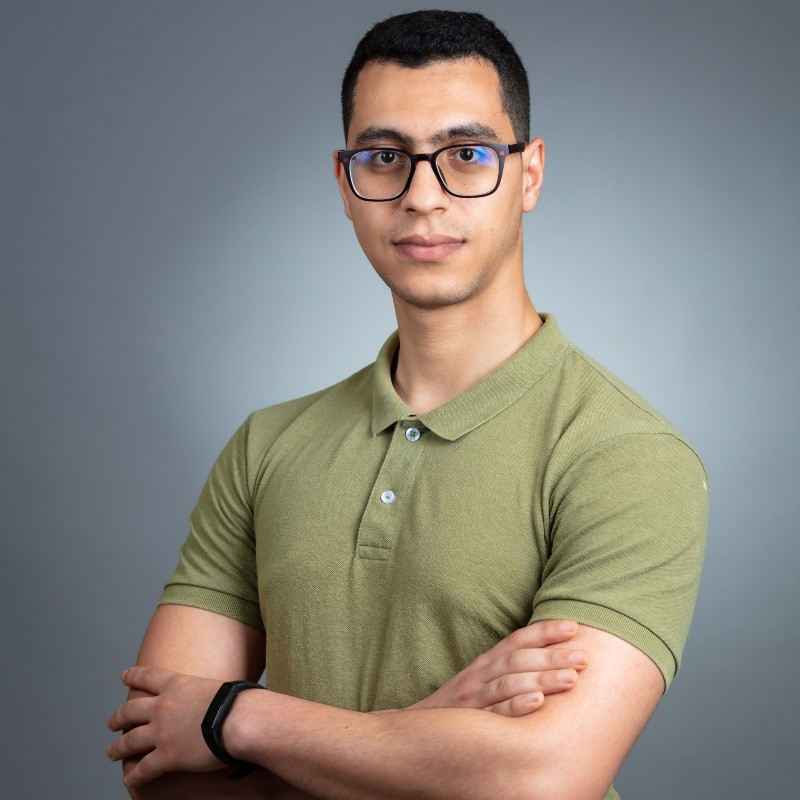

Bring your
data together.
Connect scattered sources, transform complex datasets, and build reliable pipelines that give your analytics a dependable foundation.
Data Engineer · Palantir Foundry Developer
I’m Amine. I turn fragmented data into interactive dashboards and operational applications with Palantir Foundry, helping teams move from scattered information to informed action.
THE TOOLS BEHIND
THE SOLUTIONS
01 / From complexity to clarity
Data becomes useful when people can understand it and act on it. Explore how I connect the engineering to the experience.
Start with what you have
Make the data dependable
Add context through the Ontology
Interactive concept / Synthetic data
02 / What I can build for you
From the underlying pipelines to the interface your team uses every day.
Connect scattered sources, transform complex datasets, and build reliable pipelines that give your analytics a dependable foundation.
Turn business questions into interactive dashboards. Filter the view, drill into a KPI, and understand the detail behind the number.
Model your business with the Ontology and create applications, actions, and AIP workflows that help people use data in their daily work.
03 / Selected work
Professional experience / Palantir Foundry
My work spans fleet operations and cost engineering: connecting source systems through the Ontology, building PySpark pipelines, and delivering Workshop and Slate applications for global teams.
Open source / Streaming
An API-to-database streaming pipeline: orchestrated with Airflow, streamed through Kafka, processed with PySpark, and stored in Cassandra.
Open source / Analytics
An automated ELT workflow from weather API ingestion to analytics-ready dbt models and interactive Superset dashboards.

04 / The person behind the pipelines
I’m a Data Engineer based in Morocco, with 4+ years of experience building enterprise data platforms and operational applications. My background in electronic and embedded systems shaped how I approach a problem: understand the whole system, then build something people can rely on.
At AVL and SEGULA Technologies, I’ve worked across data integration, distributed processing, and user-facing Foundry applications. I enjoy closing the gap between what the data team builds and what the business needs.
05 / Let’s connect the dots
Tell me where your data is scattered, what’s taking too long, or which question your dashboard should answer. Let’s explore a practical solution.